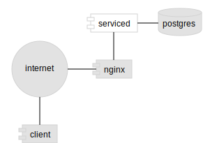

Components diagram
The components diagram shows services and processes related to one another. Good for system overviews and microservice architectures.
Use lines between components unless you are conveying signaling direction between them.
General diagram tips
In general diagrams should be kept simple, 5-9 items is a good rule (same as complexity in code).
- Highlight important components
- Use arrows when direction is important otherwise plain lines
- Reflect on cognitive placement, ie. cloud components are above others
- Use white as emphasizing color, works in both grayscale and colored diagrams
- Stick to one color scheme